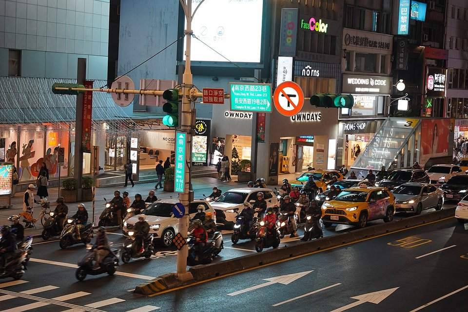

DOWNSTREAM DEMAND · TAIWAN AUTO · 2026.10
2026 年 10 月台灣車市：Tesla 空窗、颱風壓低總量，進口車占比回到五成以下
鋼鐵潮流工作室 · 台灣車市月報 · 發布 2026.11.12

本期重點
10 月新車掛牌 33,271 輛，年減 3.6%、月減 10.2%，低於業界原先預估的 3.7 萬輛，規模為近 10 年同期次低。1–10 月累計 340,481 輛，仍年增 3%。進口車占比由 9 月的 55.5% 回到 49.4%，但國產車的疲弱才是對鋼鐵業更實際的訊號。
- 三個因素壓低單月。 連假與颱風使可掛牌天數只剩 19 天，比 9 月少 1 天；Tesla 在 9 月集中交車後，10 月僅掛出 16 輛（去年 10 月也只有 21 輛）；內需對高單價耐久財仍偏觀望。
- 進口車占比回到五成以下。 進口車 16,445 輛，月減約 2 成、年增 7.1%；占比由 9 月的 55.5% 降至 49.4%，但仍高於去年同期的 44.5%。
- 國產車買氣疲弱。 國產車約 16,826 輛（總量減進口車推算），去年同期約 19,153 輛，年減約 12.1%；和泰 Toyota 國產車年減 12.4%，兩者相符。
- Toyota 包辦前三名。 Corolla Cross 3,333 輛奪回冠軍，RAV4 2,013 輛、Yaris Cross 1,263 輛；Toyota 與 Lexus 合計市占 39.3%，創兩品牌歷年 10 月新高。
- 電動車掉回 2,598 輛。 9 月為 7,026 輛；Foxtron Cavira 以 612 輛成為 10 月最熱銷電動車。
關鍵數字
新車掛牌33,271 輛年增 −3.6%、月增 −10.2%
進口車16,445 輛占 49.4%
國產車16,826 輛占 50.6%
電動車2,598 輛約占 8%
今年累計340,481 輛年增 +3.0%
累計進口占比50.0%1 月起累計
品牌與車型
| # | 車型 | 國產／進口 | 掛牌數 |
|---|---|---|---|
| 1 | Toyota Corolla Cross | 國產 | 3,333 |
| 2 | Toyota RAV4 | 進口 | 2,013 |
| 3 | Toyota Yaris Cross | 國產 | 1,263 |
| 4 | 三菱 J Space | 國產（商用車） | 1,193 |
| 5 | Toyota Town Ace | 國產（商用車） | 1,183 |
| 6 | Lexus NX | 進口 | 924 |
| 7 | Honda CR-V | 國產 | 782 |
| 8 | Ford Territory | 國產 | 779 |
| 9 | Lexus UX300h | 進口 | 776 |
| 10 | Honda HR-V | 國產 | 679 |
成長動能
- 各品牌陸續推出新車與改款，業者加大促銷力道，買氣原本熱絡，10 月下旬才受颱風干擾。
- 進口豪華車改款與新車到港：Lexus 年增 32%、Mercedes-Benz 年增 34%，豪華車整體年增 12.7%。
- Foxtron Cavira 交車回升至 612 輛，國產電動車開始有量。
- 基隆港近期卸下逾 4,000 輛 Tesla Model Y，有望墊高第四季的進口與電動車數字。
本刊解讀
- 月減是「到港節奏」，年減則是內需偏弱。 Tesla 從 5,298 輛掉到 16 輛，減少 5,282 輛，大於總量減少的 3,783 輛；扣除 Tesla 後，10 月（33,255 輛）反而比 9 月（31,756 輛）多約 1,500 輛。進口車月減約 2 成、豪華車月減 38.5%（7,496 輛，占 22.5%），主因也是 Tesla 空窗。但去年 10 月 Tesla 同樣只有 21 輛，扣除 Tesla 後年減幅度仍約 3.6%，不能歸因於船期。9 月文章預估 10 月約 3.7 萬輛，實際 3.33 萬輛，落差主因是 Tesla 空窗與連假、颱風造成的掛牌天數減少。
- 國產車的疲弱是實的。 本刊推算國產車年減約 12.1%（去年同期約 19,153 輛），Corolla Cross 與 Yaris Cross 月減 7.8%、7.5%。年底停產的 Vios 以 646 輛月增 42.9%，今年首度超越 Altis（574 輛），可能與停產前的搶購有關，不代表轎車市場回溫。Honda CR-V 以 782 輛（部分媒體為 783 輛）首度超越 Ford Territory 的 779 輛，但前 10 個月累計仍由 Territory 大幅領先。
- 進口豪華車持續分化。 進口車年增 7.1%，其中豪華車年增 12.7%。Lexus、Mercedes-Benz、BMW 三大品牌合計占豪華車市場 85.7%；Lexus NX 以 924 輛居豪華車款之首，UX300h 以 776 輛首度殺進今年前十名。
- 國產電動車開始有量。 Foxtron Cavira 612 輛、Bria 236 輛，合計 848 輛，9 月為 454 輛；Foxtron 累計 3,986 輛，占電動車市場 11.5%，居第二，僅次於 Tesla（約占 54%，累計 18,648 輛）。Toyota bZ4X 10 月 332 輛，累計 3,041 輛。
對鋼鐵業的意義
- 國產車比重決定汽車鋼板內需。 國產車在台組裝，車身用冷軋、鍍鋅鋼板部分來自國內鋼廠；進口車的鋼材全數在國外生產。10 月進口占比回到 49.4% 主要是 Tesla 到港節奏造成的月間修正，但仍高於去年同期的 44.5%；真正該看的是國產車量能年減約 12.1%，這才直接對應國內汽車鋼板需求。
- 電動車改變用鋼結構。 電動車需要更多先進高強度鋼與熱沖壓件抵消電池重量，驅動馬達則使用高效率無方向性電磁鋼片。Foxtron 等國產電動車若持續放量，對國內高階車用鋼的拉動會比進口 Tesla 直接。
- 商用車仍是國產基本盤。 三菱 J Space（1,193 輛）與 Toyota Town Ace（1,183 輛）合計 2,376 輛，兩者僅差 10 輛，穩定支撐國產車用鋼。
- 掛牌數不等於鋼材採購量。 車廠備料通常早於掛牌，單月掛牌回落不一定立即反映在鋼廠訂單；較有意義的是連續數月的國產車趨勢。
歷月趨勢
展望與觀察重點
業界預估 11 月新車掛牌約 3.8 萬輛，和泰預估 Toyota 與 Lexus 合計約 1.49 萬輛、市占 39.2%。年底前新車、改款與促銷加碼，加上近期抵港的逾 4,000 輛 Model Y 待交車，是業者看好買氣的原因。
- 11 月 Tesla 交車量能否讓進口車占比回到五成以上。
- 國產車年減幅度是否收斂，尤其 Corolla Cross 與 Yaris Cross。
- Vios 年底停產後的轎車市場，以及 Foxtron 新車交付速度。
- 全年累計能否維持正成長（目前年增 3%）。
資料來源
- 2026年10月份臺灣汽車市場銷售報告（U-CAR）
- 10月新車掛牌3.32萬輛受颱風影響 11月估3.8萬輛（中央社，2026-11-02）
- 2026年10月台灣汽車銷售報告 CR-V反超Territory、Vios賣贏Altis（8891 汽車）
- 〈車市〉耐久財買氣偏觀望？10月新車掛牌數創10年來同期次低（優分析／鉅亨網）
- 車市掛牌數低於預期 10 月達 33,271 輛 國產車買氣疲弱（聯合報）
- 台灣車市10月小幅衰退 Toyota一枝獨秀、Foxtron少見展現買氣（UDN 汽車）
- 台灣 10 月新車銷量衰退 1 成！Toyota 包辦前三名 Lexus 兩款衝進前十（自由電子報汽車頻道）
- 銷售戰報／2026年10月電動車掛牌跌破3千輛，Foxtron Cavira登上銷售龍頭（TVBS）
- 2026 年十月台灣電動車銷售排行榜：Foxtron Cavira 奪冠（DDCAR）
- Tesla年底交車潮來了！逾4000輛Model Y抵台 總市值破80億（TVBS）
- 2025年10月份臺灣汽車市場銷售報告（U-CAR，去年同期對照）
- 10月新車掛牌3.45萬輛 11月估續增至4萬輛（中央社，2025-11-03，去年同期對照）
掛牌數為監理機關數據交換資料，各媒體統計口徑可能略有差異。內容僅供產業資訊參考，不構成投資建議。新聞版權屬原出處所有。